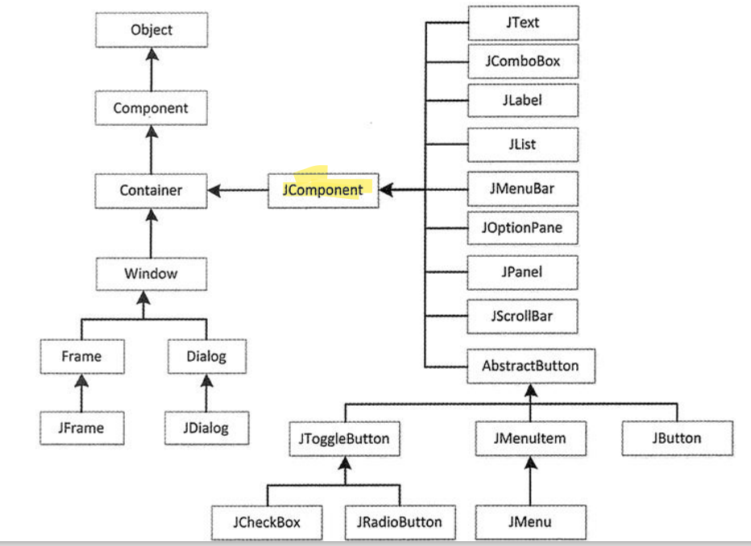
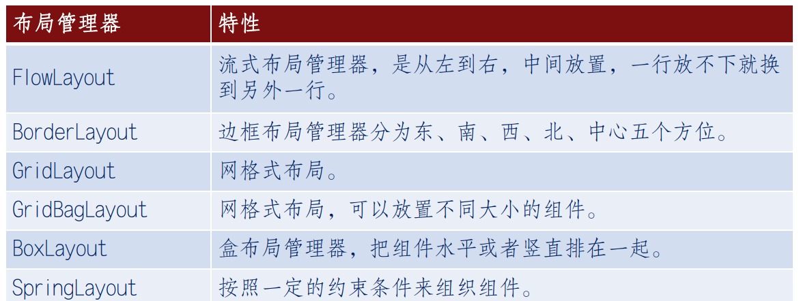
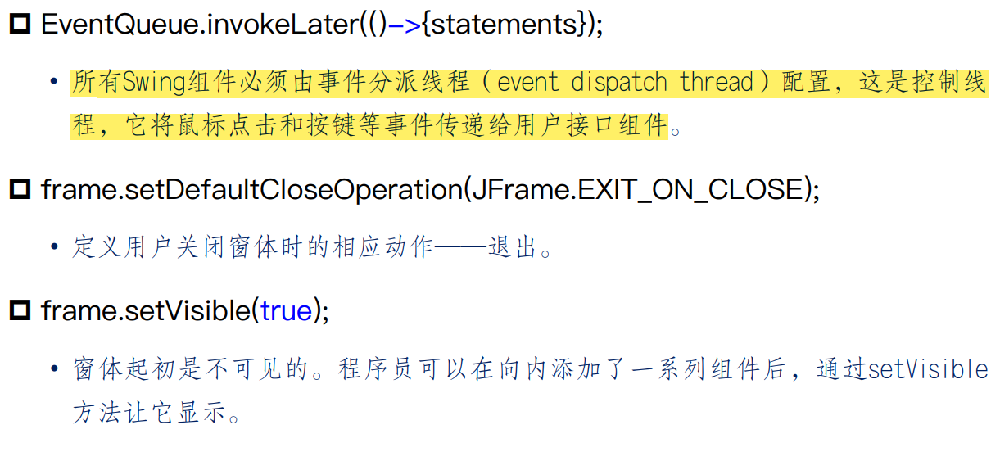
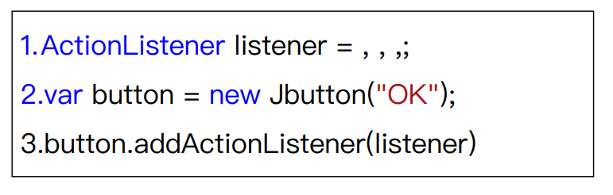
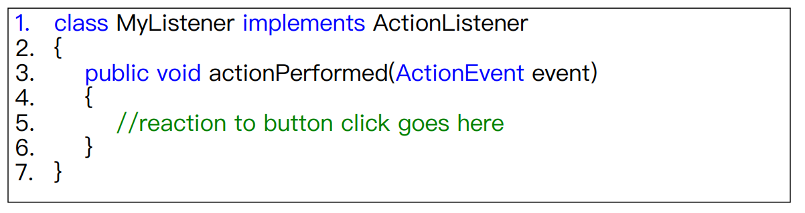
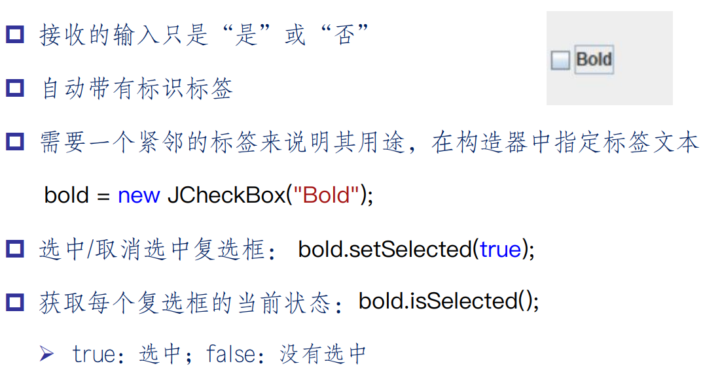
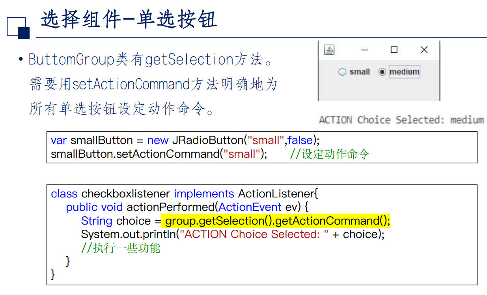
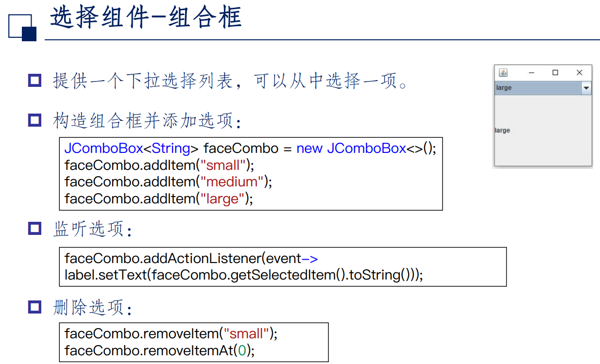
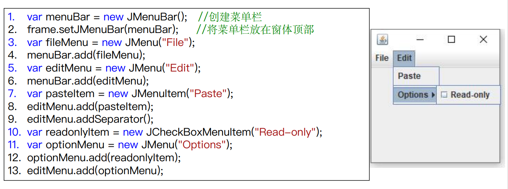
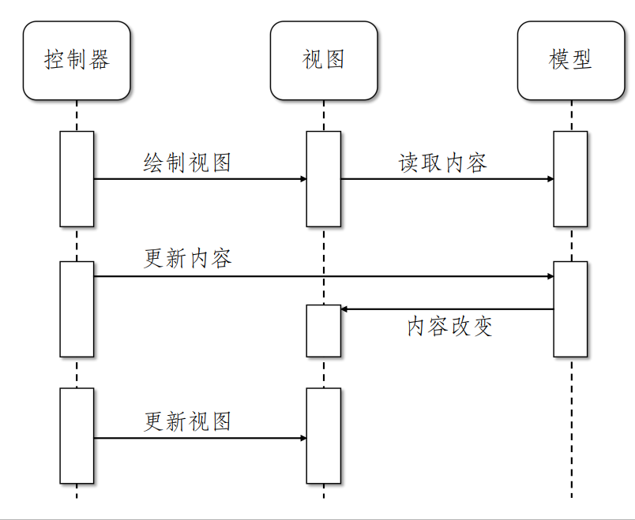

Swing图形用户界面
简单发展
$$ AWT\rightarrow Swing \rightarrow JavaFX $$
- AWT:不同平台上可能有不同的bug
- Swing:基于AWT，但提供了更强大的GUI组件，使用纯粹的Java代码来模拟各种控件，是跨平台的
- JavaFX:Java虚拟机上运行，Java11开始，不再打包到java中
Swing框架
包含组件和容器两种元素
组件
 - Swing的组件继承于JComponent类 - JComponent类提供了所有组件都需要的功能
容器
重量级容器
- 顶层容器，不继承于JComponent类
- 包括JFrame、JApplet、Jdialog
- 不能被其他容器包含
- 只能作为界面程序的顶层容器来包含其他组件
轻量级容器/中间层容器
- 继承于JComponent类
- 用来将若干个相关联的组件放在一起
- 轻量级容器本身也是组件，因此必须包含在其他的容器之中
布局管理器
- 控制着容器中组件的位置。当向容器中增加组件时，需要给容器设置一种布局管理器
- 如果不使用布局管理器，则需规划好各个组件的位置并计算组件之间的距离，再向容器中添加 常用的布局管理器 
显示窗体
- 顶层窗口成为窗体
- JFrame即为顶层窗口
- JFrame是极少数不绘制在画布上的Swing组件之一 
在窗体中打印文字消息
在窗体中绘制几何图形
在窗体中显示图像
事件
事件处理机制中的三类对象
- 事件：用户对组件的一次操作
- 点击一个按钮
- 移动鼠标
- 键盘输入字符
- 从列表中选择一个项目
- 事件源：事件发生的场所
- 事件监听器：实现了listener interface的类实例
事件机制的过程
- 事件源能够注册监听器对象并向其发送事件对象
- 当事件发生时，事件源将事件对象发送给所有注册的监听器
- 监听器再使用事件对象中的信息决定如何对事件作出响应  
tips
- 一般情况下，每个监听器执行一个单独的动作
- 有多个相互关联的动作，可以实现一个辅助方法（简介的指定监听器）
Swing基本用户组件
文本输入
1.三个继承JTextComponent类的方法： - 文本域：接收单行文本 - 文本区：接收多行文本 - 密码域：接受单行文本，但不现实文本内容 2.标签和标签组件 3.滚动窗口的设定
var textarea = new JTextArea(rows, columns);
var scrollPane = new JScorllPane(textArea);
选择组件
1.复选框  2.单选按钮：多选一  3.下拉组合框 
菜单

MVC模式
概念
模型（存储内容）-视图（外观）-控制器（对事件的反应）
关联
- 模型
- 存储完整的内容
- 实现改变内容和查找内容的方法
- 模型没有用户界面，是完全不可见的
- 视图：
- 一个模型可以有多个视图
- 模型更新时，与之关联的视图同步更新
- 控制器：
- 视图与模型分隔开来
- 负责处理用户的事件
- 决定是否将事件转化成对模型或者视图的更改 